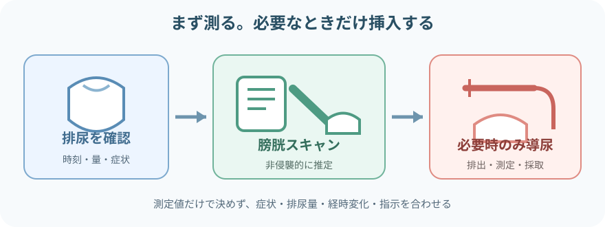
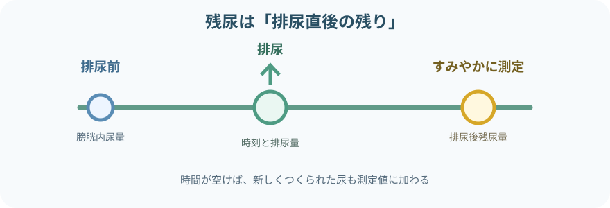
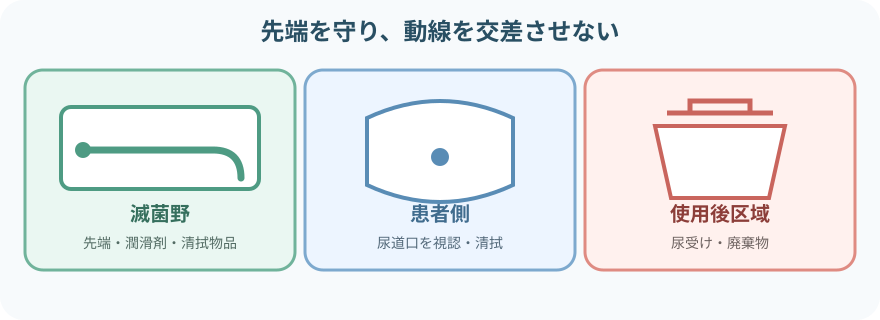
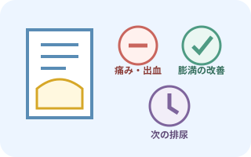

注意事項
盲目的に挿入しない
- 挿入前に評価が必要な背景
- 骨盤外傷
- 尿道損傷の疑い
- 尿道出血
- 最近の尿道手術
- 最近の前立腺手術
- 既往の確認
- 尿道狭窄
- 偽尿道
- 挿入困難歴
- 挿入時の中止サイン
- 強い抵抗
- 激しい痛み
- 出血
- 急性尿閉に伴う警戒所見
- 発熱
- 側腹部痛
- 血尿
- 全身状態悪化
残尿量だけで判断しない
- 排尿と測定の条件
- 排尿から測定までの時間
- 排尿量
- 症状の確認
- 尿意
- 下腹部膨満
- 下腹部痛
- 排尿困難
- 尿勢低下
- 患者背景
- 水分摂取
- 輸液
- 薬剤
- 麻酔
- 手術
- 神経疾患
- 合わせて評価する情報
- 腎機能
- 尿路感染
- 前回値
- 経時変化
膀胱スキャンと導尿を使い分ける

- 膀胱スキャンは不要なカテーテル挿入を減らせる。
- 測定不能・不確実な場合や治療として排出が必要な場合に導尿を検討する。
- 膀胱スキャン
- 非侵襲的に膀胱内尿量を推定する。
- 残尿測定では排尿後に行う。
- 一時的導尿：カテーテルを一時挿入し、尿を排出・測定・採取して抜去する
- 留置カテーテル
- 継続排尿が必要な別の管理。
- 必要性を毎日見直す。
- 超音波による測定値は推定値。
- スキャンの精度へ影響する条件
- 腹水
- 妊娠
- 骨盤内腫瘤
- 肥満
- 手術後の解剖変化
- 創
- ドレッシング
これらの条件では測定の精度が変わることがある。
残尿測定の考え方

- 排尿後残尿量（PVR）は、排尿後に膀胱内へ残った尿量
- できるだけ排尿後すみやかに測定し、遅れた場合は時刻を記録する
- 一回の値には測定誤差と日内変動がある
- 症状や目的に応じて再測定する
- 治療判断に使える普遍的な単一カットオフ値はない
- 院内プロトコルの値と合わせて評価
- 症状
- 排尿量
- 前回値
- 患者背景
膀胱スキャンの手順

- 膀胱は骨盤内にあり、下腹部から膀胱へ照準を合わせる。
- 色付きの区域は位置を示す目印で、固定した設置点や角度ではない。
- 実際の位置・向き・照準表示は、採用機種の説明書に従う。
- 目的と測定条件を確認する
残尿測定か膀胱容量確認かを区別する。
測定前の確認- 最終排尿時刻
- 排尿量
- 症状
- 機器と患者情報を確認する
- 説明書に従って確認・設定
- 機種
- プローブ
- バッテリー
- モード
- 患者区分
- 性別選択がない機種もある。
- 仰臥位を基本に下腹部を露出する
プライバシーを守る。
恥骨上部の確認- 創
- ドレッシング
- 膨満
- 圧痛
- 超音波用ゲルを塗布する
- 機種が指定する位置へ十分なゲルを置く。
- プローブを下腹部正中から膀胱へ向ける。
- 照準を合わせて測定する
- 画面の膀胱位置・方向表示を確認する。
- 必要に応じて角度を調整して再測定する。
- 値の妥当性を確かめる再測定が必要な場合
- 症状や触診所見と合わない
- 連続値が大きく違う
- 照準が不十分
- これらの場合は再測定する。
- 必要時は別方法で確認する。
- 清拭・消毒して記録する
- 患者のゲルを拭き、プローブを製品・施設手順で清掃消毒する。
- スキャン後の記録
- 測定時刻
- 排尿量
- PVR
- 体位
- 機種
- 症状
一時的導尿の必要物品

- カテーテル先端と尿道へ入る部分を汚染しない。
- 清潔物と使用後物品の動線を交差させない。
導尿用物品
- 指示された種類・長さ・最小限の適切な径の単回使用カテーテル
- 滅菌手袋
- 滅菌ドレープ
- 清拭用綿球
- 清拭用ガーゼ
- 鑷子
- 施設で承認された尿道周囲清拭用の滅菌液または消毒薬
- 単回使用の滅菌潤滑剤
必要時
- 指示された局所麻酔薬
採尿・環境・片付け
- 尿受け
- 計量容器
- 検体容器
- 処置シーツ
- 廃棄容器
- 照明
- 追加手袋
- 清拭用品
- 患者を覆う物品
- 尿道周囲に用いる液を一律に決めない。
- 清拭用の液の確認
- 粘膜への使用可否
- アレルギー
- 採用製品
- 院内手順
一時的導尿の手順
- 適応・既往・指示を確認する導尿前の確認
- 目的
- 尿道損傷リスク
- 手術歴
- 尿道狭窄
- 挿入困難歴
- アレルギー
- 検体採取の有無
- 説明し、体位と環境を整える
- 羞恥心と疼痛へ配慮し、必要な介助者と照明を確保する。
- 無理な開脚や肢位を避ける。
- 手指衛生後、無菌野を準備する
- 物品を使用順に置き、尿受けと廃棄物の位置を先に決める。
- カテーテル先端へ触れない。
- 尿道口を確認して清拭する
- 周囲組織を分けた手は不潔側として固定する。
- その手を固定したまま、決められた方向・回数で清拭する。
- 十分に潤滑し、優しく挿入する
- 患者へ呼吸を促し、尿の流出を確認するまでゆっくり進める。
- 必要な挿入長と陰茎の保持は患者・製品・手順に従う。
- 尿を排出・測定・採取する
カテーテルを安定させ、容器へ自然排出する。
尿の観察- 量
- 色
- 混濁
- 血液
- 沈渣
- におい
- 流出停止を確認して抜去する
- 無理な膀胱圧迫はせず、指示どおり排出後にゆっくり抜く。
- 包皮を翻転した場合は必ず元へ戻す。
- 患者を整え、再評価・記録する実施後の確認
- 疼痛
- 出血
- 腹部膨満
- 尿意
- 排尿状態
- バイタル
確認後、物品を廃棄する。
挿入を止めるサイン
- 強い抵抗があり、体位や緊張を整えても進まない
- 挿入を止める症状
- 強い痛み
- 尿道出血
- 新しい血尿
- カテーテルの状態・位置の中止サイン
- カテーテルが折れる
- カテーテルがたわむ
- 誤った位置へ入った可能性
- 尿が出ないまま十分に進み、位置を確認できない
性別・解剖で変わる点
尿道口と周囲の部位

- 尿道口は膣口より前方にあり、別の開口部。
- 形態や見え方には個人差がある。

- 尿道口は亀頭の先端にある。
- 包皮は亀頭を覆う皮膚。図では省略している。
- 位置を見分ける図で、カテーテルの挿入角度や長さを指定しない。

尿道の長さと走行は異なる。
挿入の難易度へ影響する条件
- 前立腺
- 手術歴
- 尿道狭窄
- 体位
固定した角度や長さで押し込まない。
- 女性
- 尿道口を視認して挿入する。
- 腟へ入った場合は抜いたカテーテルを再使用せず、新しい物品でやり直す。
- 男性
- 尿道の走行を整えるよう陰茎を保持する。
- 抵抗部を力で越えない。
- 包皮：処置後に必ず元の位置へ戻し、嵌頓包茎を防ぐ
- 共通：尿の流出で膀胱内への到達を確認し、必要以上に挿入・操作しない
実施後の観察

排出量だけで終わらない
- 導尿量と、直前の排尿量・膀胱スキャン値との差
- 尿性状
- 色
- 混濁
- 血液
- 沈渣
- におい
- 痛み・出血・感染徴候
- 尿道痛
- 下腹部痛
- 出血
- 発熱
- 悪寒
- 実施後の変化
- 下腹部膨満の改善
- 尿意の改善
- 血圧
- 気分不良
- その後の排尿経過
- 次回排尿時刻
- 排尿量
- 再度の残尿
- 再尿閉
測定値・排尿の異常時
- スキャン値と症状が合わないときの確認
- 体位
- 照準
- モード
- ゲル
- 確認して再測定する。
- 腹水や骨盤内病変なども考える。
- 導尿しても尿が出ないときの確認
- 位置
- 屈曲
- 閉塞
無理な再挿入を繰り返さず報告する。
- 多量の尿が排出されたときの観察
- 循環変化
- 血尿
- 尿量の推移
指示どおり報告する。
- 直ちに中止する症状
- 強い痛み
- 出血
- これらがあれば、直ちに中止する。
- 尿道損傷や偽尿道を疑って評価を依頼する。
- 繰り返す残尿・尿閉で共有する情報
- 排尿日誌
- 薬剤
- 便秘
- 神経疾患
- 泌尿器疾患
- 単回値だけでなく、これらの背景を含めて共有する。
報告・記録
- 実施前の情報
- 適応
- 最終排尿時刻
- 排尿量
- 症状
- 下腹部所見
- 膀胱スキャン
- 測定時刻
- 体位
- 機種
- モード
- 測定値
- 再測定値
- 導尿の実施状況
- 実施時刻
- カテーテルの種類
- カテーテルの径
- 挿入の難易度
- 尿流出までの状況
- 導尿結果と患者状態
- 導尿量
- 尿性状
- 検体採取
- 実施前後の疼痛
- 実施前後の出血
- 実施前後の全身状態
- 報告と今後の計画
- 異常
- 報告先
- 対応
- 再評価
- 次回の排尿計画
- 次回の測定計画
出典
- NCI SEER Training「External Genitalia」— 女性の外陰部
- NCI SEER Training「Penis」— 陰茎・亀頭・包皮
- NCI SEER Training「Urethra」— 尿道口の位置
- NIDDK, The Urinary Tract & How It Works
- CDC「Guideline for Prevention of Catheter-Associated Urinary Tract Infections：Summary of Recommendations」
- European Association of Urology Nurses「Urethral intermittent catheterisation in adults（2024）」
- NICE「Urinary incontinence and pelvic organ prolapse in women：Assessing residual urine」
- European Association of Urology「Management of Non-neurogenic Male LUTS：Post-void residual urine」
- AHRQ「Sample Bladder Scan Policy」